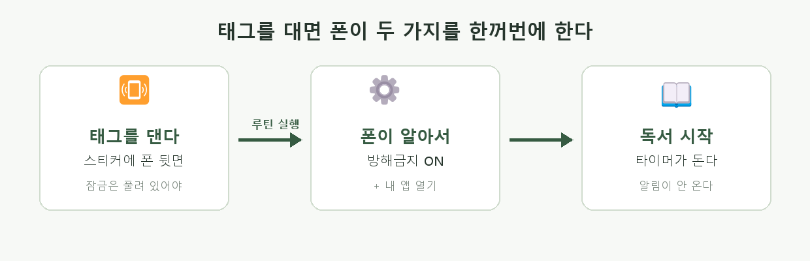
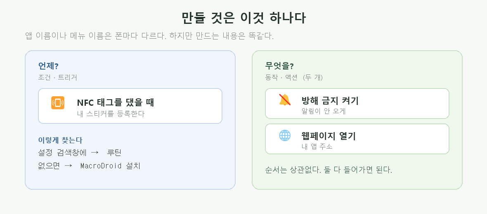
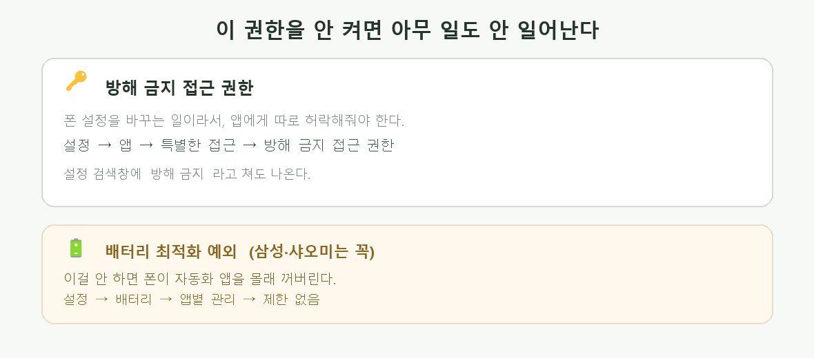
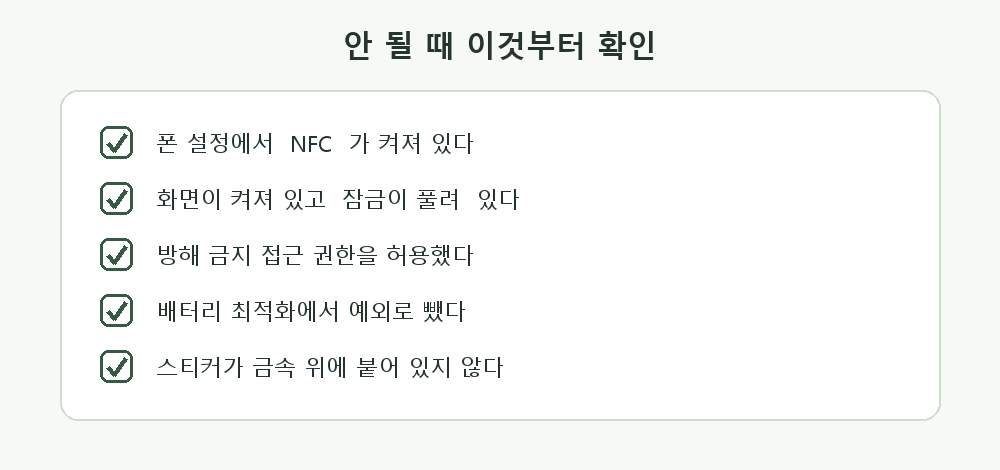

안드로이드 · NFC 스티커에 폰을 대면 저절로
스티커에 폰을 대면 방해금지가 켜지고 내 앱이 열린다. 책상에 스티커를 붙여두고, 공부 시작할 때 폰을 툭 대면 끝이다.

인터넷에 올린 내 앱 주소가 필요하다. 이렇게 생겼다.
아직 안 올렸으면 배포 가이드를 먼저 하고 오자. 내 컴퓨터에 있는 파일 주소는 안 된다.
못 찾겠으면 설정 맨 위 검색창에 NFC를 쳐보자.
폰마다 앱 이름도 메뉴 이름도 다르다. 그런데 만드는 내용은 똑같다. 이것만 기억하면 어느 폰에서든 찾을 수 있다.

동작 두 개가 다 들어가야 한다. 순서는 상관없다.
갤럭시에는 이미 들어 있다.
여기서 조건에 NFC 태그, 동작에 방해 금지와 웹페이지 열기를 넣는다.
루틴을 쳐보자.
안드로이드 버전에 따라 모드 및 루틴 / 루틴 / 빅스비 루틴으로 이름이 다르다.
플레이스토어에서 MacroDroid를 설치한다. 무료이고 한국어를 지원한다.

폰 설정을 바꾸는 일이라 따로 허락해줘야 한다. 이걸 안 켜면 루틴은 실행되는데 방해금지만 안 켜진다.
검색창에 방해 금지를 쳐도 나온다.
삼성·샤오미는 배터리를 아끼려고 자동화 앱을 몰래 꺼버린다. 그러면 며칠 잘 쓰다가 갑자기 안 된다.
안드로이드는 기종마다 화면이 다르다. 그래서 GPT에게 물을 때 내 폰이 뭔지 정확히 말해야 맞는 답이 온다.
나는 갤럭시 S23(안드로이드 14)을 쓰고 있어. NFC 스티커에 폰을 대면 (1) 방해 금지 모드가 켜지고 (2) 특정 웹페이지가 열리게 하고 싶어. 설정 → 모드 및 루틴으로 만드는 방법을 화면 순서대로 알려줘. 어디를 눌러야 하는지 메뉴 이름 그대로 말해줘.
알려준 대로 했는데 이 화면에서 막혔어: (막힌 화면을 설명하거나 캡처) 내 폰에는 그 메뉴가 안 보여. 다른 이름으로 있을 수도 있어? 아니면 앱을 설치해서 하는 방법으로 알려줘.
안드로이드에서는 웹앱이 방해금지를 끌 수 없다. 두 가지 중 하나를 쓰자.
화면 위에서 아래로 쓸어내려 방해 금지 아이콘을 누른다. 2초면 된다.
스티커를 하나 더 붙이고, 루틴을 하나 더 만든다. 조건은 그 두 번째 태그, 동작은 방해 금지 끄기.

| 이런 일이 | 이렇게 하면 된다 |
|---|---|
| 태그를 대도 아무 반응이 없다 | NFC가 꺼져 있거나 / 잠금 화면이거나 / 대는 위치가 틀렸다 |
| 앱은 열리는데 방해금지가 안 켜진다 | 방해 금지 접근 권한을 안 켰다. 4번으로 |
| 방해금지는 켜지는데 앱이 안 열린다 | 주소가 틀렸다. 브라우저에 그 주소를 직접 쳐서 열리는지 먼저 확인 |
| 어제는 됐는데 오늘 안 된다 | 배터리 최적화가 앱을 껐다. 제한 없음으로 바꾸자 |
| 매번 확인 창이 뜬다 | 루틴 설정에서 "실행 전 확인/알림"을 끈다 |
| 철제 책상에 붙였더니 안 읽힌다 | 일반 스티커는 금속 위에서 안 된다. 책 표지나 필통에 붙이자 |